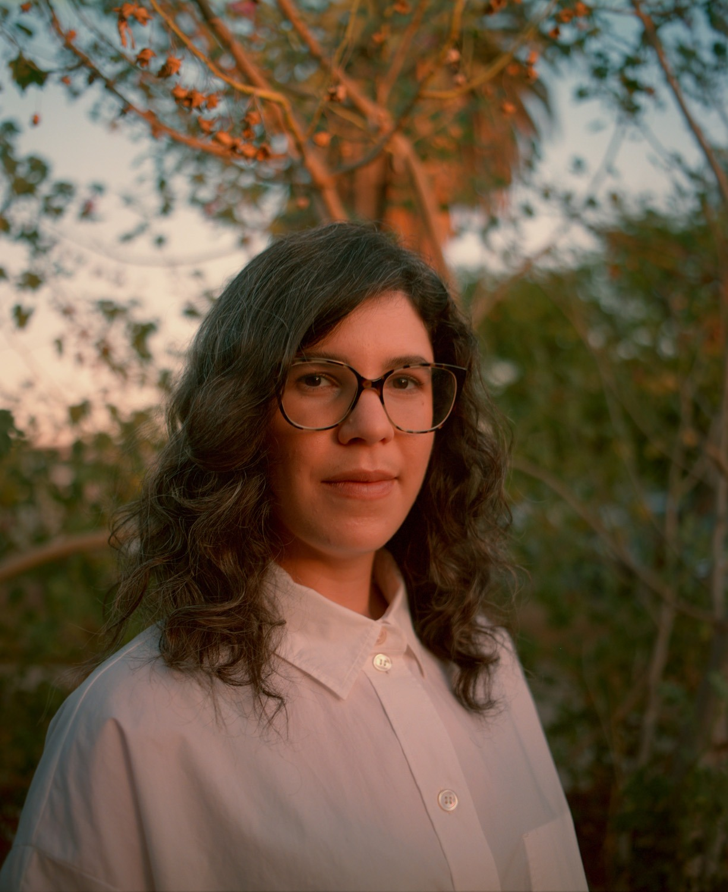
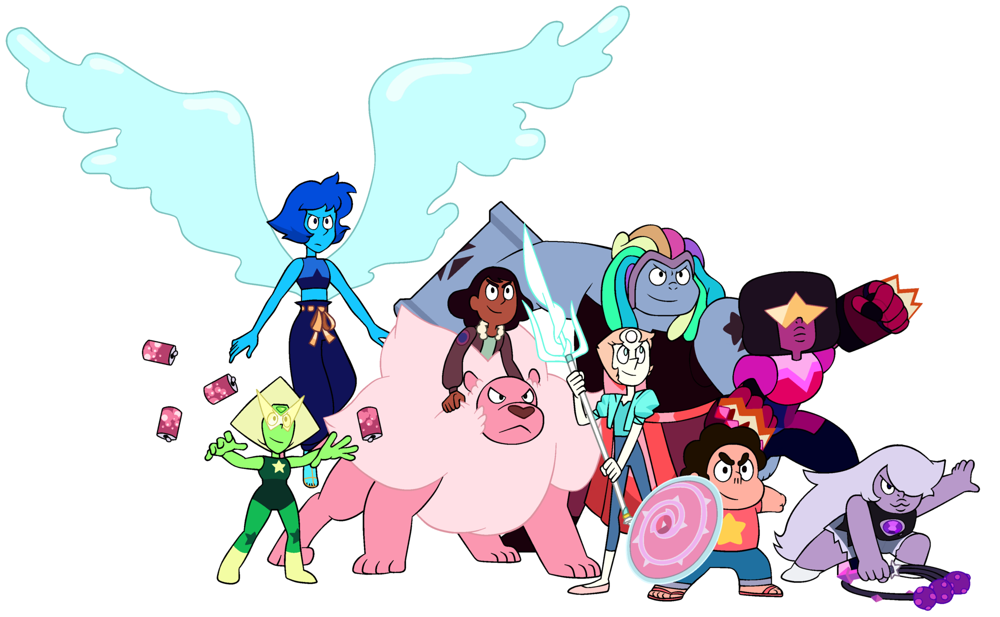
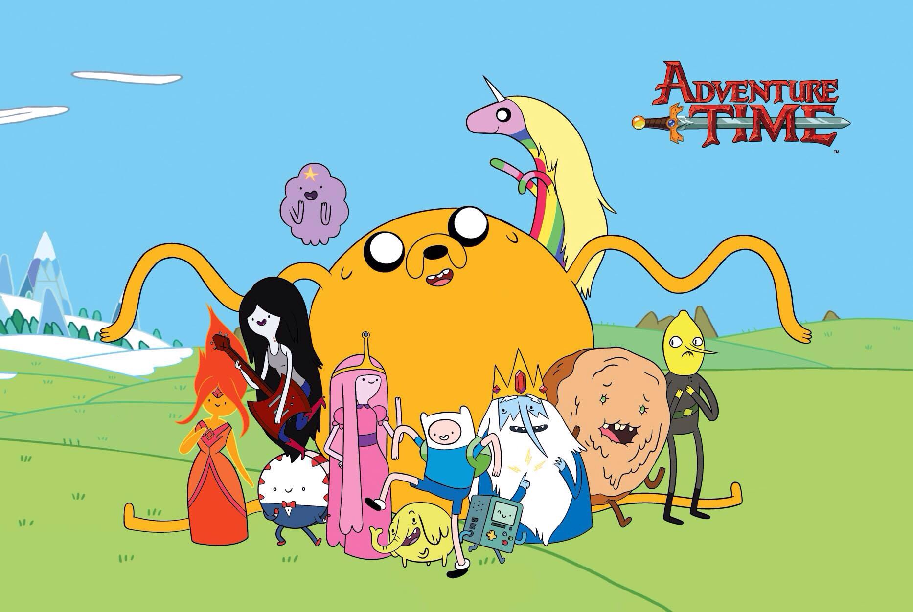

Мультсериал создан Ребеккой Шугар, которая также работала над сериалом «Время Приключений с Финном и Джейком». При создании образа Стивена Ребекка использовала некоторые черты своего младшего брата Стивена Шугара, который также включился в создание в качестве художника. По словам автора, она хотела создать историю, повествование которой происходило бы с точки зрения её младшего брата, которому все уделяли максимум внимания. Но он желал повзрослеть, а не оставаться вечным «младшим братом». Местом действия сериала является вымышленный Пляжный Город (англ. Beach city, в других переводах Прибрежье), похожий на прибрежные города, где Ребекка Шугар бывала в детстве, такие как Рехобот-Бич и Бетани Бич. Также концепция сеттинга мультсериала была вдохновлена мангой «Доктор Сламп» Акиры Ториямы, персонажи которой живут и работают в небольшой уютной деревне. Второстепенные персонажи, такие как Ларс и Сейди, были созданы ещё в те времена, когда Ребекка училась в колледже. Кристальные самоцветы, по мнению создательницы, отражают её личность — «нервные, ленивые, смелые», так Ребекка хотела, чтобы каждый кристальный самоцвет отражал одну из её сторон личности; изящество (Жемчуг), грубость (Аметист) и таинственность (Гранат).

Мультфильм отличает сильное женское присутствие — при том, что главный герой является мальчиком; все главные герои, кроме Стивена, представлены женским гендером. Кроме Рубина, но только в России и в некоторых других странах. Подобная концепция раннее не использовалась в детских мультфильмах. Ребекка сделала так намеренно, чтобы разрушить укоренившуюся практику гендерного распределения в мультфильмах для детей, где в мультфильмах для мальчиков главный герой окружён преимущественно мужскими персонажами, а в мультфильмах для девочек — наоборот. Ребекка и вовсе высказала своё недовольство по поводу того, что сериалы для девочек и мальчиков сильно отличаются по своему содержанию и жанрам. В своём же мультфильме Шугар стремится выйти за рамки гендерных ограничений, чтобы её целевая аудитория не была привязана к одному полу. Однако развитие сюжета и вселенной мультфильма не идёт по строго предписанной линии, так как Ребекка, как она отметила, продолжает расти и дальше развиваться как личность, «в чём ей помогает мультфильм».

По словам Шугар, основным вдохновением для создания мультфильма послужили аниме-сериалы Future Boy Conan, Юная революционерка Утэна и Симпсоны. Музыка создавалась под влиянием творчества Эйми Манн. Сам мультфильм Ребекка описала как «обратная семиотика», где «персонажи из мира фантастики» проявляют интерес к повседневной жизни и стремятся понять её. Сам Стивен олицетворяет любовную связь между фантазией и реальностью.

Над созданием мультфильма Ребекка начала заниматься ещё тогда, когда принимала участие в создании серий к мультсериалу «Время приключений». Некоторое время Шугар работала одновременно над «Временем приключений» и своим новым проектом, но, не выдержав нагрузки, решила полностью посвятить себя собственному проекту, оставив разработку «Времени приключений» на 14 эпизоде 5 сезона. В своём проекте Ребекка как исполнительный продюсер выполняет значительную часть: работает над сюжетом каждой серии, дизайном, анимацией. Перед тем, как создавать анимацию на компьютере, Ребекка прорисовывает сцены вручную карандашом. Затем раскадровки с готовыми голосами озвучивания отправляются к двум студиям в Южной Корее — Сонмин и Rough Draft, где команда аниматоров и дизайнеров создаёт готовую версию серий.